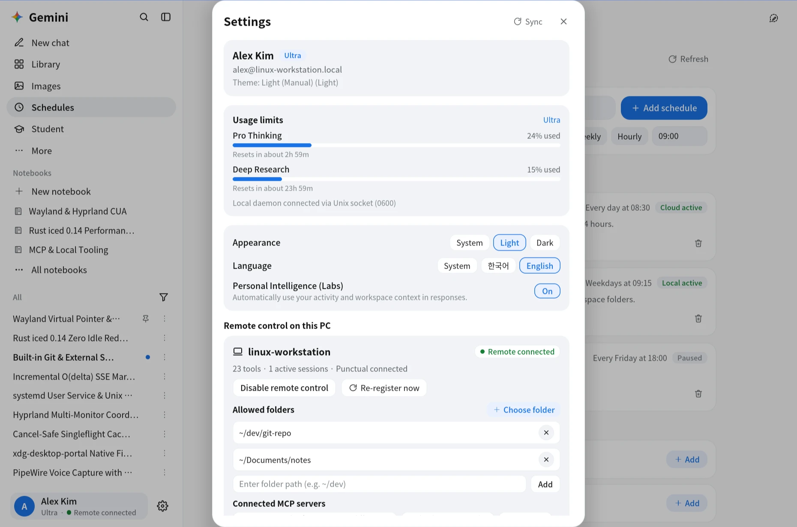

iced 0.14 GUI + Go 1.27 데몬 · Electron 0%
Rust iced 0.14 GUI + Go 1.27 Daemon · Zero Electron
답답한 Electron 대신,Leave Heavy Electron. 가볍고 즉각적인Native, Instant Linux GeminiLinux Gemini
단순 CLI 브리지가 아닙니다. Rust 풀 네이티브 데스크톱 UI(gemini-ui)와
Go 양방향 원격 데몬(gemini-remote)으로 채팅·Canvas·예약 작업·23종 MCP·Wayland Computer Use까지 처리합니다.
오래 켜 두어도 메모리가 불어나지 않고, 유휴 순간 CPU는 0.0%로 가라앉습니다.
Far beyond a CLI bridge. A full Rust native desktop UI (gemini-ui) paired with a
Go bidirectional daemon (gemini-remote) handles chat, Canvas, schedules, 23 MCP tools, and Wayland Computer Use — staying flat in RAM with 0.0% idle CPU all day.
위 파형은 동작 원리 시연이며, 화면은 실제 gemini-ui 1860×1230 HiDPI 캡처입니다 (클릭 시 확대).
Live waveform illustrates runtime behavior; screenshots are genuine 1860×1230 HiDPI captures from gemini-ui (click to zoom).
시간이 흐를수록 압도적으로 벌어지는 격차 Flat All Day While Chromium Clients Swell
Electron 클라이언트는 브라우저 엔진과 렌더러를 통째로 품고 돌아가 장시간 켜두면 메모리가 수백 MB~1 GB 이상 불어나고 유휴 중에도 CPU를 깨웁니다.
gemini-desktop-linux는 Rust GUI와 Go 데몬에 10가지 정적 성능 불변조건을 박아 넣어 5시간이 지나도 처음과 똑같이 가볍습니다.
Electron apps ship an entire Chromium runtime that steadily inflates in RAM and wakes CPU timers while idle.
gemini-desktop-linux enforces 10 static performance invariants across Rust and Go so hour five feels identical to minute one.
24시간 연속 구동 타임랩스24-Hour Uptime Timelapse
$ ps -eo pid,comm,rss,pcpu,etime --sort=-rss | grep gemini- PID COMMAND RSS %CPU ELAPSED 2616179 gemini-ui 92200 0.0 05:13:24 2612874 gemini-remote 24076 0.0 05:13:50
※ 위 ps 결과는 실제 Linux(Wayland/Hyprland) 환경에서 5시간 13분 연속 구동 후 측정한 원본 수치입니다. Electron 수치는 Chromium 다중 프로세스 앱의 전형적 추세를 보여 주는 참고 비교치입니다.
Note: The ps output is a genuine Linux (Wayland/Hyprland) measurement after 5h 13m of continuous uptime. Electron values show typical multi-process Chromium trends for reference.
핵심 항목 비교Head-to-Head Breakdown
| 항목Dimension | Native (Rust+Go) | Electron |
|---|---|---|
| 렌더링UI Runtime | Rust + iced 0.14 (GPU) | Chromium + V8 |
| 5시간+ RAM5h+ RAM | ~116 MB (92 + 24) | 500 MB – 1.2 GB+ |
| 유휴 CPUIdle CPU | 0.0% (리드로우 00 redraws) | Timers & GC wakeups |
| 스트리밍Streaming | O(delta) SSE + tail | Full DOM re-render |
| Linux 통합Linux Native | Wayland · Hyprland · X11 | No official Linux build |
| 성능 가드Perf Guard | 10 static CI checks | — |
유휴 리드로우 0 원칙Zero Idle Redraws
상시 타이머 구독을 금지하고 event::listen_with로 필수 단축키·파일 드롭만 통과시켜 마우스 이동·유휴 시 CPU 0.0%를 지킵니다.No always-on timers; event::listen_with filters only required shortcuts and drops so idle CPU stays at 0.0%.
O(delta) 증분 마크다운O(delta) Markdown Tail
ParsedMarkdown::push_delta로 끝 블록만 증분 추가하고 구조 재파싱(80ms)과 자동 스크롤(60ms)을 쓰로틀링합니다.Appends incoming tokens to the tail block via push_delta while throttling structural re-parses (80ms) and autoscroll (60ms).
프레임 할당 억제Zero-Clone Frame Paths
&'a AppTheme 참조 전달, canvas::Cache 지오메트리 캐시, OnceLock 정적 SVG, 인덱스 기반 지연 복사를 강제합니다.Passes &'a AppTheme by reference, caches geometry via canvas::Cache, reuses OnceLock SVGs, and defers copy lookups by index.
커넥션 풀 · 업로더 재사용Shared HTTP & Upload Pools
요청마다 클라이언트를 새로 만들지 않고 robin.Client의 공용 HTTP·이미지·Scotty 업로더 풀을 재사용합니다.Reuses shared HTTP, image, and Scotty uploader pools across handlers instead of spawning per-request clients.
취소 비전염 singleflightCancel-Safe Singleflight
동시 메타·프로필·라이브러리 조회를 병합하되 한 호출자의 취소가 공용 실행에 전염되지 않게 컨텍스트를 분리합니다.Coalesces duplicate RPCs with isolated execution contexts so one caller canceling never aborts shared inflight work.
O(N) SSE 증분 전송O(N) SSE Prefix Deltas
compactStreamChunk로 누적 본문 재전송(O(N²)) 대신 순수 증분 델타만 0600 권한 Unix 소켓으로 보냅니다.Streams pure prefix deltas over a 0600 Unix socket via compactStreamChunk, eliminating O(N²) payload resends.
직접 밀어 보는 다크 · 라이트 실화면 Slide Across Real Dark & Light HiDPI Captures
모든 화면은 실제 gemini-ui 릴리즈 바이너리를 Wayland HiDPI(1860×1230)에서 캡처했습니다. 가운데 핸들을 좌우로 밀거나 이미지를 클릭해 원해상도로 확인해 보세요.
Every screen is captured directly from the release gemini-ui binary on Wayland at 1860×1230 HiDPI. Drag the curtain below or click any screen to inspect full resolution.
GFM 표, 코드 구문 강조, Canvas까지 네이티브 GPU 렌더Native GPU Rendering for Tables, Code & Canvas
시스템 및 Omarchy 테마를 실시간 파일 감시 스트림으로 자동 추종하고, 설정에서도 다크·라이트를 즉시 전환합니다.Follows system and Omarchy themes live via background file watchers, with instant manual toggle inside Settings.
- 01지연 복사 & 구문 강조 코드블록Zero-clone copy & syntax highlighting표·코드·Canvas 원문을 뷰에 복제하지 않고 클릭 시점에만 인덱스로 복사합니다.Tables, code blocks, and Canvas cards resolve copy payloads lazily by index.
- 02올인원 8개 워크스페이스 섹션All 8 Workspace Sections채팅, 라이브러리(지연 로드), 이미지·동영상 스튜디오, 노트북, 학생 학습, Gems, 맞춤설정을 모두 담았습니다.Chat, lazy-loaded Library, Image/Video Studio, Notebooks, Student, Gems, and Personalize in one binary.
 Dark Theme
Light Theme
Dark Theme
Light Theme
예약된 작업과 키보드 중심 워크플로우Scheduled Actions & Keyboard-First Navigation
클라우드·로컬·추천 예약을 한 화면에서 관리하고 완료 시 notify-send로 데스크톱 알림을 띄웁니다. 통합 검색으로 과거 대화 본문의 정확한 턴으로 바로 점프합니다.Manage cloud, local, and recommended schedules with desktop notify-send alerts, plus full-text search that jumps directly to matching turns.

사용 한도 게이지부터 23개 원격 도구 권한까지 한눈에Usage Gauges, Locale & Scoped Remote Control
Pro Thinking·Deep Research 한도 게이지, 한국어/English 실시간 전환, Punctual 스트림 상태, 허용 폴더 화이트리스트와 MCP 서버 연결을 설정 모달에서 바로 제어합니다.Inspect live usage limit gauges, switch Korean/English on the fly, monitor Punctual stream health, and scope allowed folders & MCP servers directly in Settings.
- 01허용 폴더 화이트리스트Explicit Folder Sandbox원격 파일 읽기·편집·검색은 등록된 워크스페이스 폴더 안에서만 허용됩니다.Remote file read, edit, and grep operations stay strictly inside registered directories.
- 02Linux 데스크톱 네이티브 연동Native Linux IntegrationsPipeWire 음성 녹음,
xdg-desktop-portal파일 선택기,slurp+grim화면 캡처를 지원합니다.Integrates PipeWire voice capture,xdg-desktop-portalfile dialogs, andslurp+grimscreen capture.

모바일에서 Linux 워크스테이션까지, 살아 있는 양방향 파이프라인 One Bidirectional Pipeline from Phone to Wayland Desktop
gemini-ui는 0600 Unix 소켓으로 Go 데몬과 대화하고, gemini-remote는 모바일·웹·데스크톱 어디서 보낸 작업이든 허용 폴더와 23종 도구로 안전하게 실행합니다. 아래 카테고리 카드를 눌러 실제 도구 호출 흐름을 확인해 보세요.
gemini-ui communicates over a 0600 Unix socket while gemini-remote bridges Gemini Mobile, Web, and Linux with 23 scoped local, MCP, and Computer Use tools. Click any category below to preview a live tool dispatch.
gemini-ui
92 MB RSS · 유휴 0.0% · O(delta) 마크다운 · Canvas · 8개 섹션92 MB RSS · 0.0% idle · O(delta) Markdown · Canvas · 8 sections
gemini-remote
24 MB RSS · singleflight · 23종 로컬/MCP · Wayland/X11 CUA24 MB RSS · singleflight · 23 local/MCP · Wayland/X11 CUA
Gemini Mobile · Web
외출 중 폰에서 Linux 빌드·Git·화면 제어 지시 및 대화 동기화Trigger Linux builds, Git ops, and GUI actions from phone or web
원커맨드 빌드 · 설치 및 시작하기 One-Command Build, Install & Launch
./install.sh 한 번으로 gemini-remote(Go)와 gemini-ui(Rust release)를 빌드해 ~/.local/bin/, 앱 런처(.desktop), 아이콘, systemd 사용자 서비스까지 자동 등록합니다.
./install.sh builds both release binaries, installs them to ~/.local/bin/, and sets up the desktop entry, icon, and systemd user service.
# 1. Clone & build both Go daemon + Rust GUI
git clone https://github.com/KyongSik-Yoon/gemini-desktop-linux.git
cd gemini-desktop-linux
./install.sh
# 2. Configure OAuth client credentials & sign in
gemini-remote extract-keys /path/to/Gemini.app
gemini-remote login
# 3. Allow workspace folders & start background daemon
gemini-remote folders add ~/dev/git-repo
gemini-remote register
gemini-remote service install
# 4. Launch native Linux Gemini Desktop
gemini-ui요구 사항 & 검증Requirements & Verification
- OS: Ubuntu, Arch / Omarchy, Fedora (Wayland / Hyprland & X11)
- Build: Go 1.27+ · Rust 1.85+ (
edition = "2024") - 선택 도구Optional:
xdg-desktop-portal,slurp+grim,pw-record,notify-send - 성능 가드Perf Guard:
./scripts/perf-guard.sh --full - 제거Uninstall:
./uninstall.sh